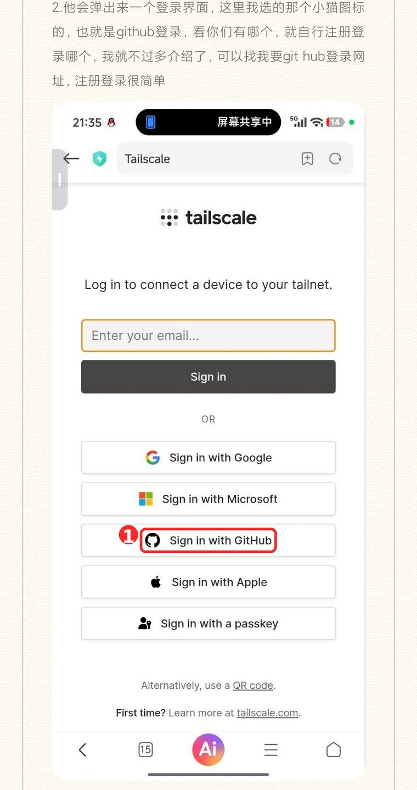
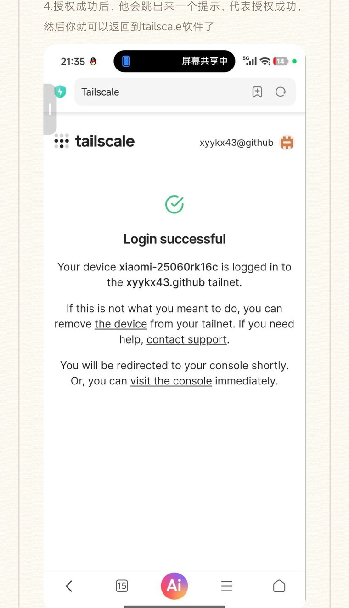
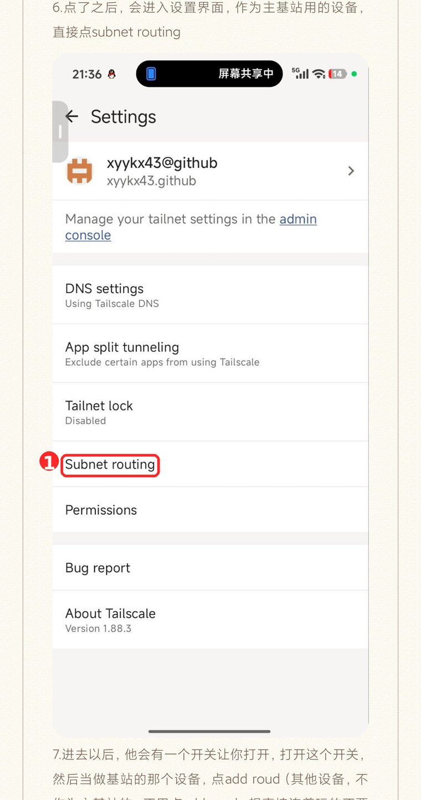
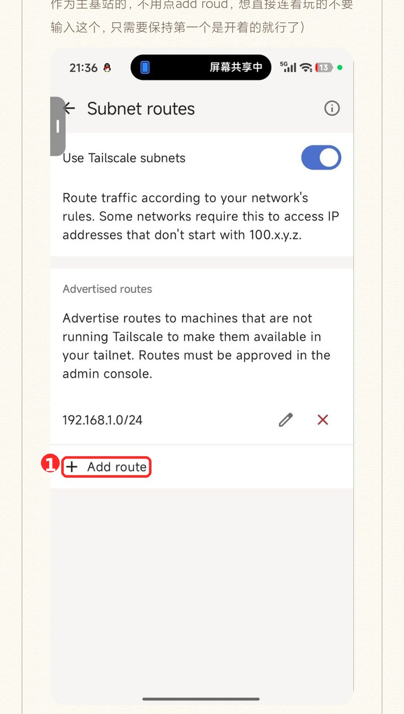
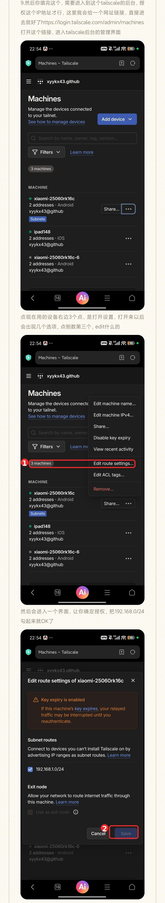
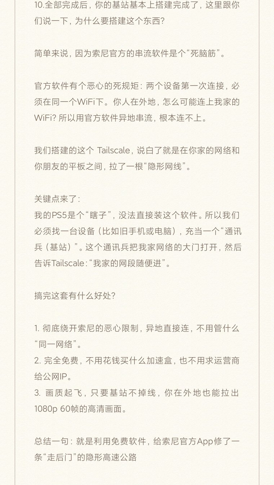
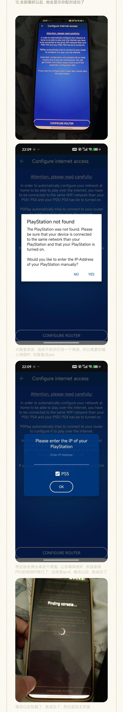
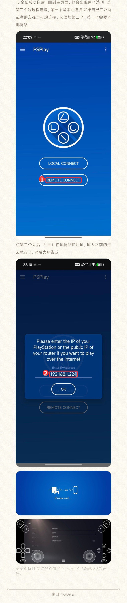
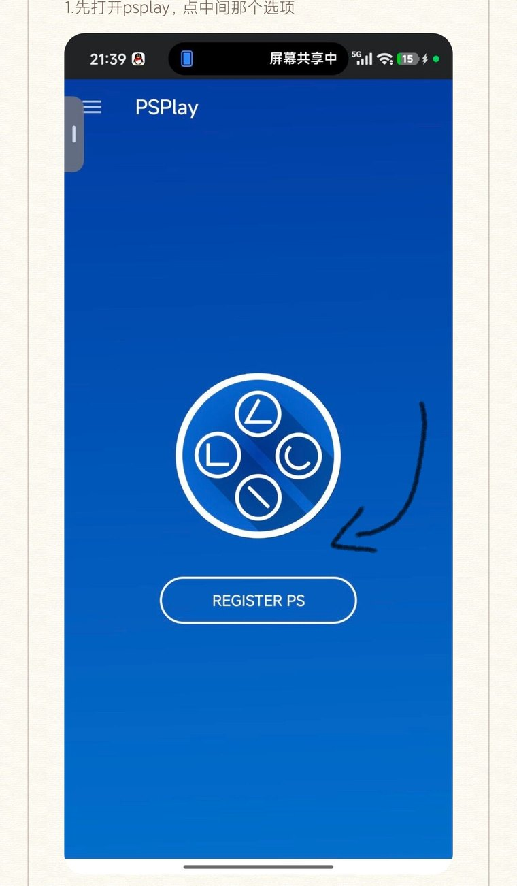

让 PS5 在任何地方都能玩
Tailscale 组网 + PSPlay 串流。先把东西准备好，再跟着点 13 步。
开始前先备好
- 1一台能装 App 的手机或平板（安卓 / iOS 都行）
- 2一个 Tailscale 账号：用 GitHub、Google、微软或苹果账号登录，注册 1 分钟
- 3装好 PSPlay（安卓约 38 元购买；iOS 用外区账号买）
- 4PS5 已开机，并在 设置 → 系统 → 远程游玩 里启用远程游玩
- 5家里网络是 NAT 1 或 NAT 2（PS5 → 设置 → 网络 → 查看连接状态）
- 6一台常开的「基站」：旧手机或电脑，插电不关机
NAT 1 是开放型，NAT 2 是家庭宽带最常见的类型，这两种都能连。NAT 3 会卡，NAT 4（对称型）基本连不上，先查这个再买软件，省得白花钱。
工具下载
账号与密码请联系客服索取，不要在群里转发。
VX ea7-4398 / QQ 2143742498
教程
一个段落一张图，红圈是要点的地方。













怎么查自家网段
PS5 → 设置 → 网络 → 查看连接状态，记下 IPv4。前三段就是网段：192.168.1.224 → 192.168.1.0/24。
同一 WiFi 下用 PSPlay 直连，不用 Tailscale。这段是前面的准备知识和本地注册流程。



最容易踩的 6 个坑
1. 网段要填自己家的，不是照抄 192.168.1.0/24。
2. 后台没批准网段＝没生效，必须 Edit route settings 勾选保存。
3. 8 位配对码只有几分钟有效，过期回 PS5 重新点「链接设备」。
4. Tailscale 和 UU、迅游等加速器会打架，连不上先全关掉。
5. 接收端别开热点，直接连 WiFi 或流量，套娃网络延迟爆炸。
6. NAT4（对称型）基本连不上，换网络或用电脑做基站。
常见问题
一定要买 PSPlay 吗？官方 App 不行？
官方 PS Remote Play 免费，但首次连接强制要求两台设备在同一 WiFi 下；人不在家就做不到，所以异地串流基本都用 PSPlay。本地同 WiFi 玩，官方 App 也够用。
怎么查我的 NAT 类型？
PS5 → 设置 → 网络 → 查看连接状态 → NAT 类型。类型 1/2 可以，3 会卡，4 基本连不上。查出来是 4，就别买软件了，先找宽带运营商开公网 IP。
为什么填完网段没有任何反应？
Tailscale 有两步：App 里 Add route 只是「声明」，还必须去后台批准 —— login.tailscale.com/admin/machines → 设备右边三点 → Edit route settings → 勾选网段 → Save。少这一步等于没开。
基站用什么设备最好？
首选家里一直开着的电脑（Win/Mac）。只能用安卓手机的话，必须插着电、屏幕别息屏、关掉电池限制，而且不能带出门。这个设备一断，你在外面就连不上。
配对码老是报错？
PS5 屏幕上那 8 位数有效期只有几分钟，拿到就立刻填进 PSPlay；超时了回 PS5 重新点「链接设备」再拿一次。
一直卡在「正在连接」？
把 PSPlay 彻底「清除数据」（不是只清缓存），回 PS5 重新拿注册码再走一遍。另外确认 Tailscale 和加速器没有同时开着。
能和朋友一起玩吗？
可以。你在家用手柄登主号在电视上玩；朋友串流登副号。前提是你的 PS5 要把主号设为「常用主机」，否则朋友那个号跑不了你买的游戏。
画质怎么设置最稳？
1080p、60 帧、码率手动填 15000–20000，HDR 和超分辨率先关掉。设备烫就加散热壳，过热会掉帧。
会不会有风险 / 会不会封号？
串流只是登录你自己的账号看自己的主机，正常使用不涉及封号。共享账号借玩的风险自负，也违反平台条款，不建议。
评论区
评论由 GitHub 提供，第一次发言授权一次即可。